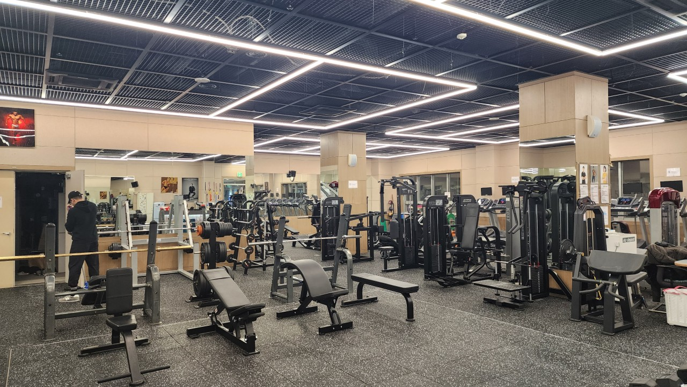

사진 출처: 네이버지도 트러스트짐 업체 페이지
일주일에 제일 많이 가는 장소 중 하나
육체적인 건강뿐만 아니라 스트레스 해소를 하기에도 좋습니다.
찾아가는 방법
김수환관 1층에 위치해 있으며 카페멘사를 지나 체육관 입구 왼쪽에 위치하고 있습니다.
헬스장 정보
- 운영시간
평일 - 07:00 ~ 22:30
토요일 - 09:30 ~ 18:00
건강을 위해 찾는 장소

사진 출처: 네이버지도 트러스트짐 업체 페이지
육체적인 건강뿐만 아니라 스트레스 해소를 하기에도 좋습니다.
김수환관 1층에 위치해 있으며 카페멘사를 지나 체육관 입구 왼쪽에 위치하고 있습니다.